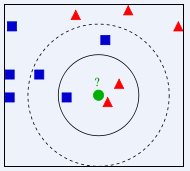

前言
KNN对实际问题的的解决实例，也是一个比较简单的分类问题
实验介绍
1.实验内容
本实验内容为如何基于kNN算法对IRIS数据集进行分类。
2.实验目标
通过本实验进一步掌握kNN算法原理，了解如何使用kNN模型解决实际世界问题。
3.实验知识点
- kNN算法原理
- kNN算法流程
4.实验环境
- python 3.6.5
5.预备知识
- 初等数学知识
- Linux命令基本操作
- Python编程基础
- kNN算法原理
实验原理
1.kNN算法简介
k近邻法(k-nearest neighbor, kNN)是1967年由Cover T和Hart P提出的一种基本分类与回归方法。它的工作原理是：存在一个样本数据集合，也称作为训练样本集，并且样本集中每个数据都存在标签，即我们知道样本集中每一个数据与所属分类的对应关系。输入没有标签的新数据后，将新的数据的每个特征与样本集中数据对应的特征进行比较，然后算法提取样本最相似数据(最近邻)的分类标签。一般来说，我们只选择样本数据集中前k个最相似的数据，这就是k-近邻算法中k的出处，通常k是不大于20的整数。最后，选择k个最相似数据中出现次数最多的分类，作为新数据的分类。
所谓K最近邻，就是k个最近的邻居的意思，说的是每个样本都可以用它最接近的k个邻居来代表。kNN算法的核心思想是如果一个样本在特征空间中的k个最相邻的样本中的大多数属于某一个类别，则该样本也属于这个类别，并具有这个类别上样本的特性。该方法在确定分类决策上只依据最邻近的一个或者几个样本的类别来决定待分样本所属的类别。 kNN方法在类别决策时，只与极少量的相邻样本有关。由于kNN方法主要靠周围有限的邻近的样本，而不是靠判别类域的方法来确定所属类别的，因此对于类域的交叉或重叠较多的待分样本集来说，kNN方法较其他方法更为适合。

上图中，绿色圆要被决定赋予哪个类，是红色三角形还是蓝色四方形？如果K=3，由于红色三角形所占比例为2/3，绿色圆将被赋予红色三角形那个类，如果K=5，由于蓝色四方形比例为3/5，因此绿色圆被赋予蓝色四方形类。
K最近邻(k-Nearest Neighbor，KNN)分类算法，是一个理论上比较成熟的方法，也是最简单的机器学习算法之一。该方法的思路是：如果一个样本在特征空间中的k个最相似(即特征空间中最邻近)的样本中的大多数属于某一个类别，则该样本也属于这个类别。KNN算法中，所选择的邻居都是已经正确分类的对象。该方法在定类决策上只依据最邻近的一个或者几个样本的类别来决定待分样本所属的类别。 KNN方法虽然从原理上也依赖于极限定理，但在类别决策时，只与极少量的相邻样本有关。由于KNN方法主要靠周围有限的邻近的样本，而不是靠判别类域的方法来确定所属类别的，因此对于类域的交叉或重叠较多的待分样本集来说，KNN方法较其他方法更为适合。
KNN算法不仅可以用于分类，还可以用于回归。通过找出一个样本的k个最近邻居，将这些邻居的属性的平均值赋给该样本，就可以得到该样本的属性。更有用的方法是将不同距离的邻居对该样本产生的影响给予不同的权值(weight)，如权值与距离成反比。
2.kNN计算流程
a.计算已知类别数据集中的点与当前点之间的距离；
b.按照距离递增次序排序；
c.选取与当前点距离最小的k个点；
d.确定前k个点所在类别的出现频率；
e.返回前k个点所出现频率最高的类别作为当前点的预测分类。
准备工作
下载kNN_IRIS.tgz 提取码：pluy
到指定目录下，然后再依次选择点击上方的File->Open->Upload,上传刚才下载的数据集压缩包，再使用如下命令解压：
1 | !tar -zxvf kNN_IRIS.tgz |
kNN_IRIS/
kNN_IRIS/iris.csv
kNN_IRIS/iris.txt
kNN_IRIS/iris1.csv实现kNN核心算法
这里使用的kNN算法前边已经提到过，就简单的看代码复习一下。
1 | import numpy as np |
【练习】IRIS分类-背景
Iris数据集是常用的分类实验数据集，由Fisher, 1936收集整理。
数据解析
Iris数据包含150条样本记录，分剐取自三种不同的鸢尾属植物setosa、versic010r和virginica的花朵样本，每一类各50条记录，其中每条记录有4个属性：萼片长度(sepal length)、萼片宽度sepalwidth)、花瓣长度(petal length)和花瓣宽度(petal width)。
【练习】准备数据数据归一化
1 | #-*- coding: UTF-8 -*- |
【练习】测试算法验证分类器
为了检验上述程序是否正确，编写一下代码，测试只需上面的代码。
1 | #coding:utf-8 |
参考文献与延伸阅读
参考资料:
1.哈林顿，李锐. 机器学习实战 : Machine learning in action[M]. 人民邮电出版社, 2013.
2.周志华. 机器学习:Machine learning[M]. 清华大学出版社, 2016.
延伸阅读
1.李航. 统计学习方法[M]. 清华大学出版社, 2012.
后续实训
基于kNN算法的实训类实验，包括：
* 基于kNN的手写字识别
* 基于kNN的约会网站效果判定
* 基于kNN的乳腺癌分类
通过以上实训实验，可进一步加强对kNN理论、算法、应用等各方面知识的掌握。